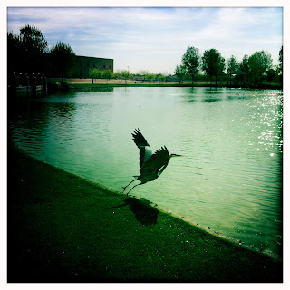
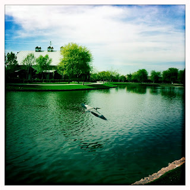
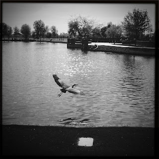

Recovered weblog entry
Blue Heron
[Originally published March 30, 2012]



He seemed amicable enough. I would take two steps, he would shuffle a few to the left. His gaze never left mine, and when he flew, he never gained more than a few yards' advantage. It almost seemed a game; the heron daring me to try again before taking flight. People stopped and stared at my vain attempts at closer shots. Ultimately, I chose to halt what could have been a real annoyance to this poor bird.
Doesn't make him any less beautiful. And my pops thinks he was just a baby, too. He seemed big enough to me.